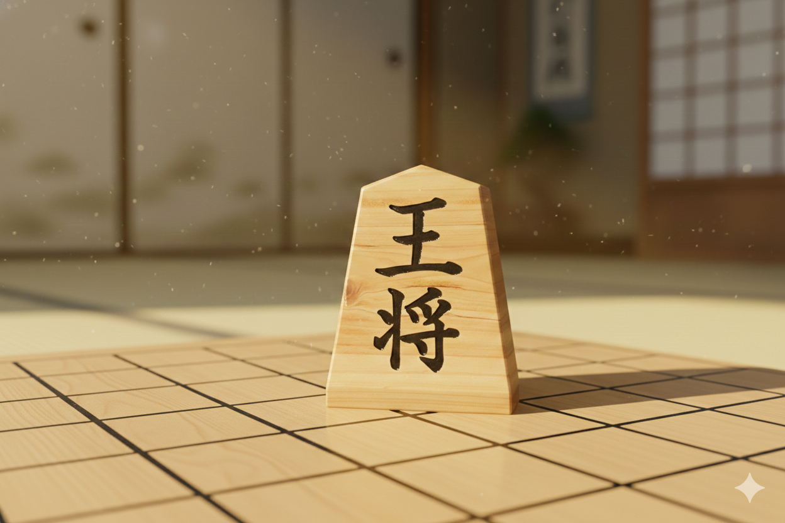

Board Game Portal
遊びたいゲームを選択してください

5x5 将棋
AIと対戦するミニ将棋です。
難易度を選択
リバーシ
本格写真素材を使用したリバーシです。
難易度を選択
チェス
AIと対戦する8x8のチェスゲームです。
難易度を選択
取扱説明書・利用規約
5x5 将棋（ミニ将棋）ルール
- 勝利条件：相手の「王」を先に捕まえた（詰ませた）方の勝ちです。
- 駒の動き：王・金・銀ともに、本将棋と同じ動きをします。
- 持ち駒：取った駒は自分の手番で好きな空きマスに打てます。
リバーシ ルール
- 基本：相手の石を自分の石で挟んで自分の色に変えます。
- 勝利条件：最終的に盤面の石の数が多い方の勝ちです。
チェス ルール
- 勝利条件：相手の「キング」を追い詰めて逃げ場をなくす（チェックメイト）と勝利です。
- 基本：将棋と異なり、取った駒を再利用（持ち駒）することはできません。
- プロモーション：ポーンが一番奥の列に達すると、クイーンなどの強力な駒に昇格します。